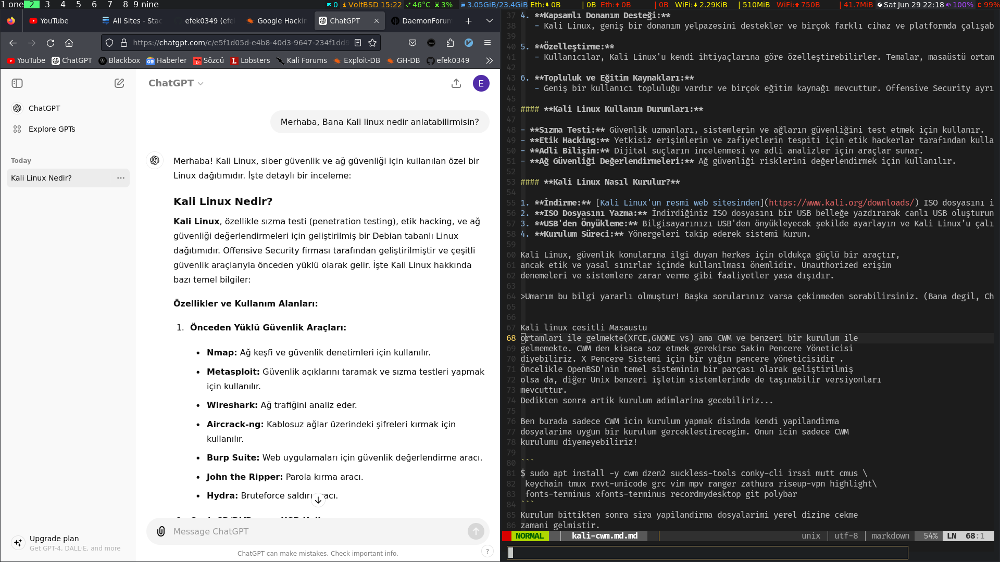

Kali Linux nedir diye yazamayacagim ama sizin icin ChatGPT'ye sordum ve bana gayet guzel bir cevap verdi kendisi sagolsun. :)
Kali Linux Nedir?
Kali Linux, özellikle sızma testi (penetration testing), etik hacking, ve ağ güvenliği değerlendirmeleri için geliştirilmiş bir Debian tabanlı Linux dağıtımıdır. Offensive Security firması tarafından geliştirilmiştir ve çeşitli güvenlik araçlarıyla önceden yüklü olarak gelir. İşte Kali Linux hakkında bazı temel bilgiler:
Özellikler ve Kullanım Alanları:
- Önceden Yüklü Güvenlik Araçları:
- Nmap: Ağ keşfi ve güvenlik denetimleri için kullanılır.
- Metasploit: Güvenlik açıklarını taramak ve sızma testleri yapmak için kullanılır.
- Wireshark: Ağ trafiğini analiz eder.
- Aircrack-ng: Kablosuz ağlar üzerindeki şifreleri kırmak için kullanılır.
- Burp Suite: Web uygulamaları için güvenlik değerlendirme aracı.
- John the Ripper: Parola kırma aracı.
-
Hydra: Bruteforce saldırı aracı.
-
Canlı CD/DVD veya USB Kullanımı:
-
Kali Linux, bir USB bellek veya canlı CD/DVD üzerinden çalıştırılabilir. Bu, işletim sistemi kurulumuna gerek kalmadan kullanabilmenizi sağlar.
-
Güncellenmiş Paketler ve Destek:
-
Offensive Security, Kali Linux'u düzenli olarak güncelleyerek en yeni güvenlik araçlarını ve yamalarını sunar.
-
Kapsamlı Donanım Desteği:
-
Kali Linux, geniş bir donanım yelpazesini destekler ve birçok farklı cihaz ve platformda çalışabilir.
-
Özelleştirme:
-
Kullanıcılar, Kali Linux'u kendi ihtiyaçlarına göre özelleştirebilirler. Temalar, masaüstü ortamları, ve araç konfigürasyonları kolayca değiştirilebilir.
-
Topluluk ve Eğitim Kaynakları:
- Geniş bir kullanıcı topluluğu vardır ve birçok eğitim kaynağı mevcuttur. Offensive Security ayrıca Kali Linux ile ilgili resmi eğitimler ve sertifikalar sunar.
Kali Linux Kullanım Durumları:
- Sızma Testi: Güvenlik uzmanları, sistemlerin ve ağların güvenliğini test etmek için kullanır.
- Etik Hacking: Yetkisiz erişimlerin ve zafiyetlerin tespiti için etik hackerlar tarafından kullanılır.
- Adli Bilişim: Dijital suçların incelenmesi ve adli analizler için araçlar sunar.
- Ağ Güvenliği Değerlendirmeleri: Ağ güvenliği risklerini değerlendirmek için kullanılır.
Kali Linux Nasıl Kurulur?
- İndirme: Kali Linux'un resmi web sitesinden ISO dosyasını indirin.
- ISO Dosyasını Yazma: İndirdiğiniz ISO dosyasını bir USB belleğe yazdırarak canlı USB oluşturun (Rufus veya balenaEtcher gibi araçlarla).
- USB'den Önyükleme: Bilgisayarınızı USB'den önyükleyecek şekilde ayarlayın ve Kali Linux’u çalıştırın veya kurun.
- Kurulum Süreci: Yönergeleri takip ederek sistemi kurun.
Kali Linux, güvenlik konularına ilgi duyan herkes için oldukça güçlü bir araçtır, ancak etik ve yasal sınırlar içinde kullanılması önemlidir. Unauthorized erişim denemeleri ve sistemlere zarar verme gibi faaliyetler yasa dışıdır.
Umarım bu bilgi yararlı olmuştur! Başka sorularınız varsa çekinmeden sorabilirsiniz. (Bana degil, ChatGPT'ye :) )
Kali linux cesitli Masaustu ortamlari ile gelmekte(XFCE,GNOME vs) ama CWM ve benzeri bir kurulum ile gelmemekte. CWM den kisaca soz etmek gerekirse Sakin Pencere Yöneticisi diyebiliriz. X Pencere Sistemi için bir yığın pencere yöneticisidir . Öncelikle OpenBSD'nin temel sisteminin bir parçası olarak geliştirilmiş olsa da, diğer Unix benzeri işletim sistemlerinde de taşınabilir versiyonları mevcuttur. Dedikten sonra artik kurulum adimlarina gecebiliriz...
Ben burada sadece CWM icin kurulum yapmak disinda kendi yapilandirma dosyalarima uygun bir kurulum gerceklestirecegim. Onun icin sadece CWM kurulumu diyemeyebiliriz!
$ sudo apt install -y cwm dzen2 suckless-tools conky-cli irssi mutt cmus \
keychain tmux rxvt-unicode grc vim mpv ranger zathura riseup-vpn highlight\
fonts-terminus xfonts-terminus recordmydesktop git polybar
Kurulum bittikten sonra sira yapilandirma dosyalarimi yerel dizine cekme zamani gelmistir.
$ git clone --branch kali https://github.com/efek0349/dotfiles.git
Sira dotfiles dizine girip kendimize gore duzenlemeye geldi. Yapilacak is kullanici adini kendimize gore duzenlemeye geldi!. Ilerleyen zamanlarda belki bunun icin bir betik yazip kurulumu direk otomatik tamamlayabilirim ama suan icin soz konusu degil.
$ cd dotfiles
ile dizene girelim ve .git dizini silelim suan icin onunla bir isimiz yok.
$ rm -rf .git*
Simdi benim dosyalardaki adimi, kendi sisteminizdeki kullanici adi ile degistirelim. Ben bunun icin basit bir komut yazdim. Siz kali adini kendi kullanici adiniz ile degistirmeyi unutmayin sadece!
$ sed -i -e 's/efek/kali/g' bin/* .vimrc .zshrc .fehbg .cwmrc .Xresources
Artik yapilandirma dosyalarimi kendi dizininize kopyalama zamani geldi.
$ cp -rv .* ~/
$ cp -rv * ~/
Artik sistemi yeniden baslatabiliriz. Bazi yazilimlari el ile kurmamiz gerekecek. Depolarda bulunmamakta. (ls++) gibi.
Ekran goruntusu!
